Entrar e painel
Acesse app.ekthoschurch.com com o e-mail e a senha recebidos da igreja. Após entrar, o sistema abre o Painel, com os indicadores do mês: pessoas ativas, novos visitantes, membros, células e novos convertidos. O menu lateral esquerdo leva a todos os módulos; o que aparece nele depende do seu perfil (ver seção 9).
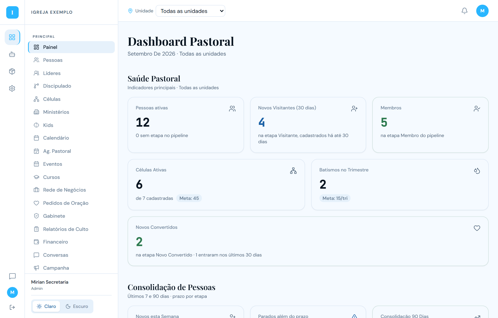
- O tema Claro / Escuro fica no canto inferior esquerdo.
- O sino no topo mostra notificações; o avatar abre seu perfil e o botão de sair.
Unidades
Igrejas com mais de uma unidade (por exemplo Itaipu e Trindade) têm o seletor Unidade no topo de todas as telas. Ele vale para Pessoas, Painel e Caminho de Discipulado ao mesmo tempo, e fica salvo até você trocar.
Todas as unidades
Mostra todas as pessoas da igreja. Nunca exclui ninguém.
Itaipu ou Trindade
Só pessoas cadastradas naquela unidade a partir da data de corte da igreja.
Sem unidade definida
Pessoas anteriores à data de corte, ou cadastradas sem unidade. É um estado real, não um erro.
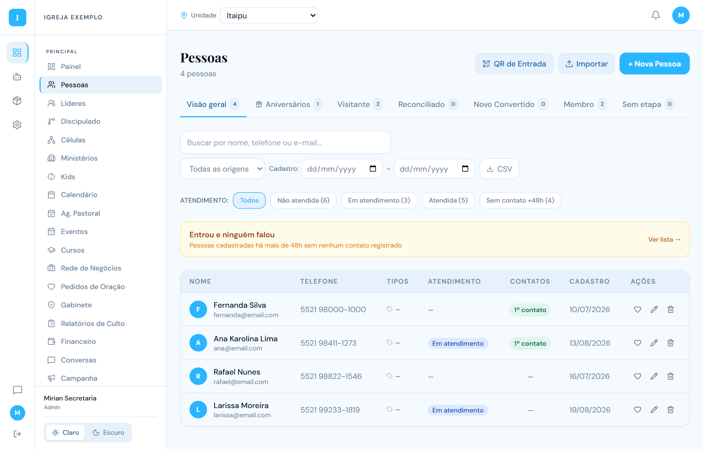
Pessoas
A tela Pessoas é o centro do CRM. Nela você cadastra, procura, filtra, exporta e inicia o atendimento pastoral de cada pessoa.
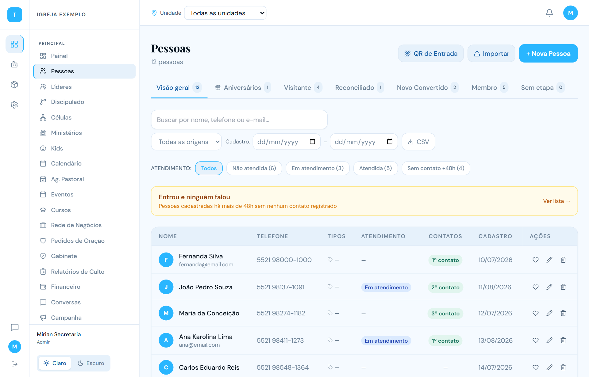
Abas e contadores
As abas superiores classificam as pessoas pela etapa atual do caminho de discipulado: Visitante, Reconciliado, Novo Convertido, Membro, além de Aniversários (do mês) e Sem etapa. O número em cada aba é a mesma contagem que aparece no Painel e no Discipulado, sempre respeitando a unidade selecionada.
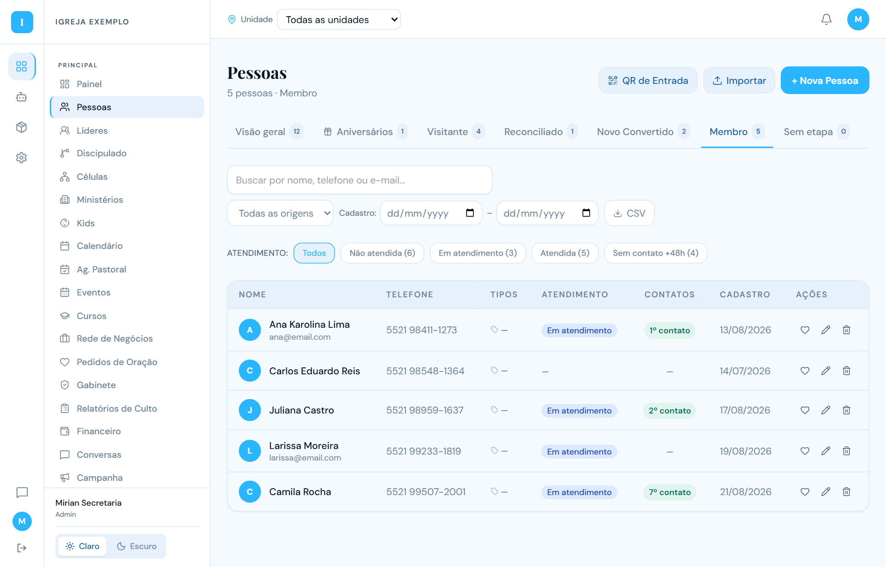
Busca e filtros
- Buscar por nome, telefone ou e-mail. A busca não diferencia maiúsculas, acentos nem cedilha: "conceicao", "CONCEIÇÃO" e "Conceição" trazem o mesmo resultado (seção 8).
- Todas as origens. Filtra pela forma de entrada: QR Code, manual, importação, etc.
- Cadastro de/até. Período de cadastro. Na aba Visitante o período é o da primeira visita.
- Atendimento. Não atendida, Em atendimento, Atendida e Sem contato +48h (pessoas cadastradas há mais de 48 horas sem nenhum contato registrado).
- CSV exporta a lista filtrada; Importar carrega uma planilha; QR de Entrada gera o QR de cadastro de visitantes.
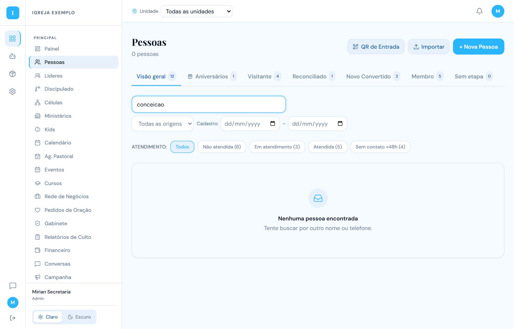
Coluna Contatos
A coluna Contatos mostra quantos contatos pastorais formais já foram registrados com a pessoa, como ordinal: 1º contato, 2º contato, 3º contato… Um traço significa que ainda não houve contato. Esse número só sobe quando alguém registra um atendimento na ficha da pessoa (seção 5). Mensagens de WhatsApp e ações automáticas não contam.
Ações por linha: coração abre a ficha de atendimento, lápis edita o cadastro, lixeira exclui. Clicar no nome abre o painel de detalhes.
Cadastrar e editar pessoa
Clique em + Nova Pessoa ou no lápis de uma linha. O formulário tem as abas Pessoal, Eclesiástico, Formação, Financeiro (só para quem pode ver) e Acompanhamento.
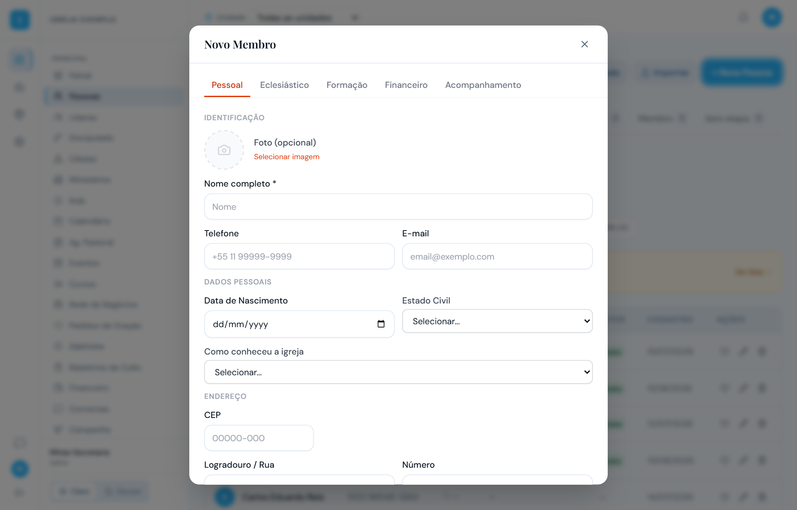
Aba Eclesiástico
- Etapa do discipulado. Define a aba em que a pessoa aparece em Pessoas.
- Unidade / Sede. Obrigatória em igrejas com unidades. Cadastro novo não entra sem unidade.
- Célula e líder (preenchido automaticamente), data de conversão, batismo, dons e talentos.
- Ministérios. Marque os ministérios a que a pessoa pertence. Ao salvar, o sistema mantém os que já estavam, adiciona os novos e remove os desmarcados.
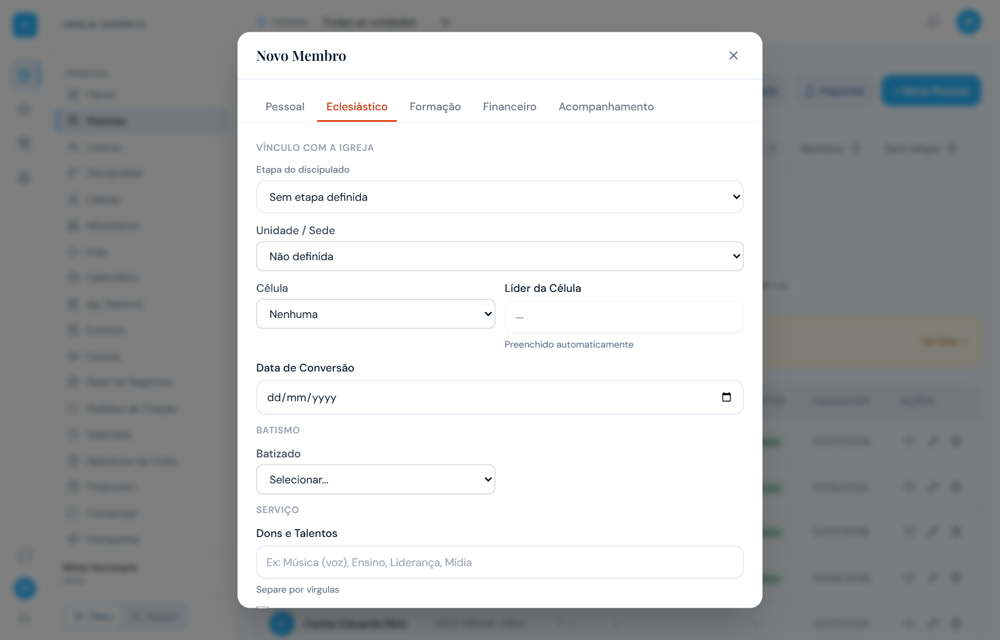
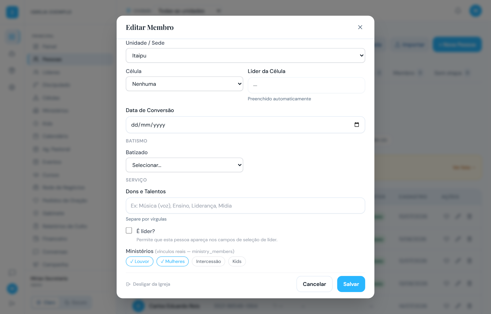
Na aba Acompanhamento ficam as observações pastorais (visíveis só para administradores). O botão Desligar da Igreja tira a pessoa das listas ativas sem apagar o cadastro; ela pode ser religada depois.
Atendimento pastoral
Na lista de Pessoas, clique no coração da linha para abrir a ficha de atendimento. Ela mostra quem é a pessoa, quantos contatos já foram feitos, qual é o próximo, o formulário para registrar a conversa e o histórico.
Como registrar um contato
- Confira a faixa Contatos pastorais: ela diz quantos contatos existem e qual é o próximo ("Próximo: 4º contato"). A numeração é automática e não pode ser escolhida à mão.
- Complete dados que faltam (bairro, cidade, como conheceu, estado civil) e marque os sinais desta conversa (aceitou Jesus, quer célula, quer servir…). O sistema sugere a etapa seguinte.
- Em Registrar Nº contato, escolha o canal (pessoalmente, WhatsApp, ligação, e-mail, visita), o resultado (contato realizado, sem resposta, reagendado, encaminhado, não atendeu, número errado, pediu retorno, não quer contato, mudou de igreja) e escreva as anotações.
- Se quiser, defina a etapa, o próximo passo com data e o ministério para encaminhar.
- Clique em Salvar atendimento. O contato entra no histórico como o Nº contato e a coluna Contatos em Pessoas passa a mostrar o novo ordinal.
Histórico de contatos
Cada contato mostra ordinal, data e hora, responsável, canal, resultado e observação. É o registro oficial do que aconteceu.
Status da jornada
"Em atendimento" enquanto a jornada estiver aberta. Os resultados "Não quer contato" e "Mudou de igreja" encerram a jornada e o status passa a "Encerrado" com o motivo. Encerrar não conta como contato.
Depois do 4º contato
Os quatro primeiros são os marcos do processo, mas não há limite: o 5º, 6º, 7º… continuam sendo registrados com o número real.
Pessoa sem jornada
Se a pessoa ainda não tem jornada de discipulado, escolha a etapa antes de salvar. O sistema abre a jornada e registra o 1º contato no mesmo passo.
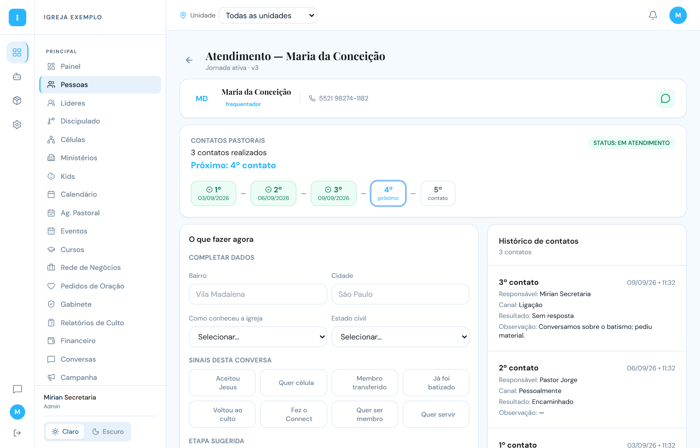
Ministérios
Cada ministério tem um card com nome, líder e a quantidade de Pessoas vinculadas. O botão Pessoas aparece apenas nos ministérios que você pode administrar: todos, para administradores; só o seu, para o líder com conta vinculada.
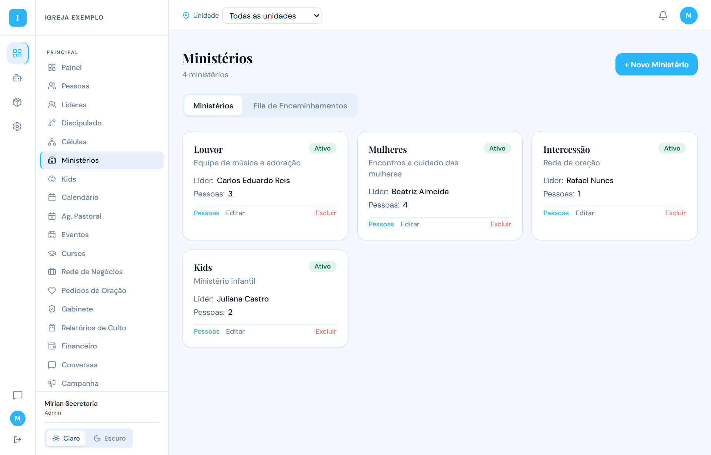
Incluir e remover pessoas do ministério
- No card do ministério, clique em Pessoas.
- Em Pesquisar pessoa, digite parte do nome. A busca ignora maiúsculas, acentos e cedilha e não oferece quem já está no ministério. Se aparecer "Mostrando os primeiros 20 resultados", refine o nome.
- Selecione a pessoa e clique em Incluir. Ela passa a aparecer na lista "Pessoas do ministério" e, ao mesmo tempo, com esse ministério marcado no seu cadastro.
- Para remover, clique em Remover ao lado do nome e confirme. Só o vínculo com o ministério é removido; o cadastro da pessoa continua igual.
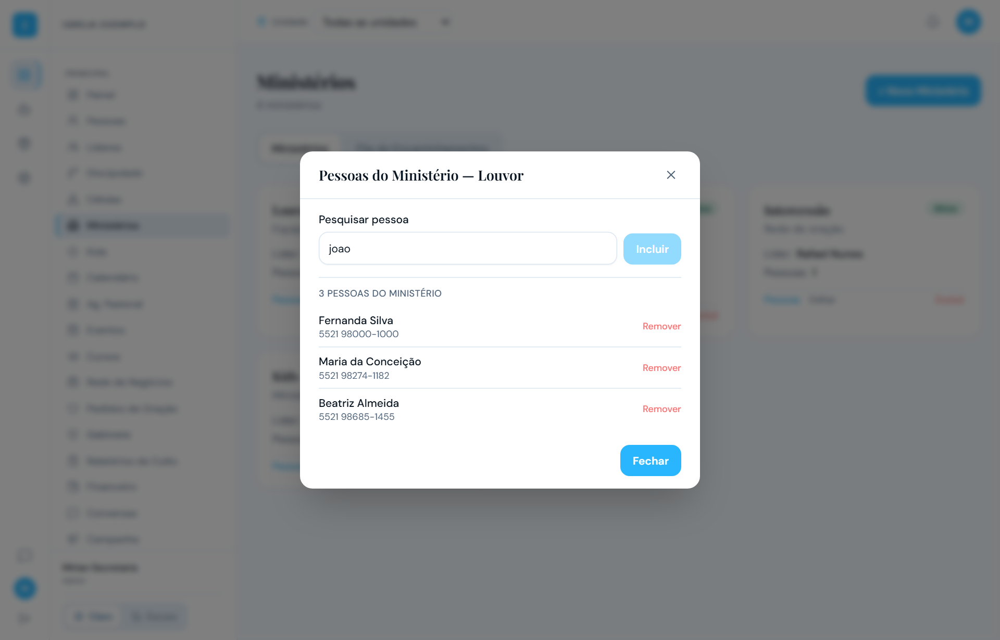
Vincular a conta do líder (administrador)
Em Editar no card do ministério, há dois campos diferentes: Líder (pessoa), quem lidera o ministério, e Conta de acesso do líder, o login que poderá incluir e remover pessoas daquele ministério. Sem a conta vinculada, o líder vê o ministério mas não administra as pessoas.
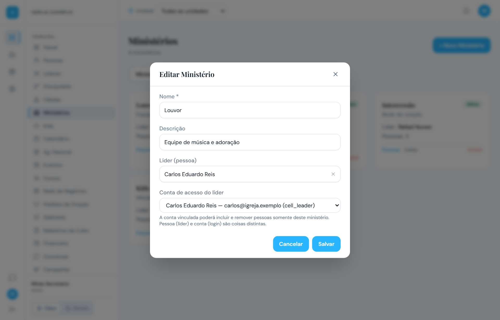
Caminho de discipulado
O painel de Discipulado mostra, etapa por etapa, quantas pessoas estão em cada uma, quantas entraram no período, quantas avançaram e quantas estão paradas além do prazo. Clique em uma etapa para ver as pessoas. Os números seguem a unidade selecionada e batem com as abas de Pessoas.
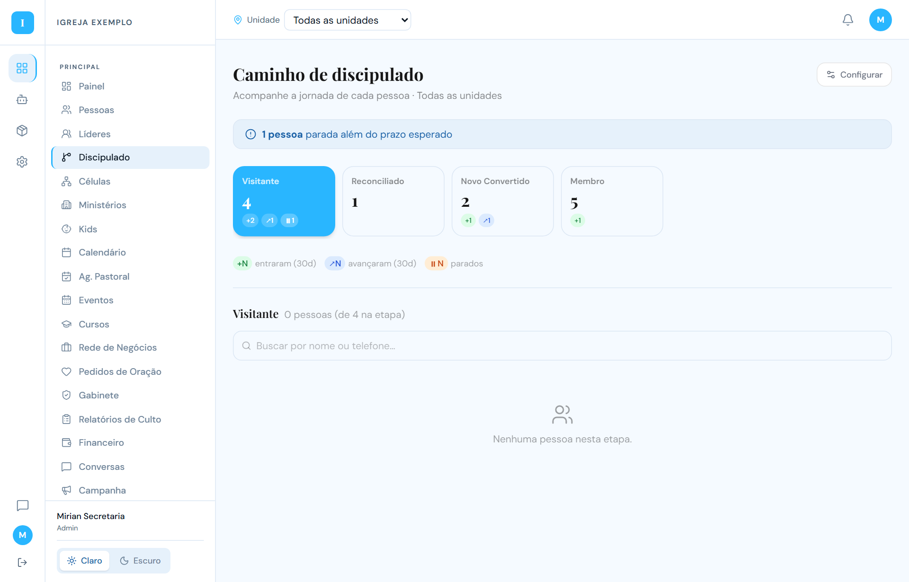
Regra de busca
Em todo o sistema a busca por texto não diferencia caixa alta e baixa, acento e cedilha, nem espaços antes ou depois. Os três grupos abaixo trazem exatamente os mesmos resultados:
| Você digita | Encontra |
|---|---|
| Fernanda · fernanda · FERNANDA · " Fernanda " | todas as Fernandas |
| João · joao · JOAO · JOÃO | todos os Joãos |
| Conceição · conceicao · CONCEICAO · CONCEIÇÃO | todas as Conceições |
Vale para Pessoas, Aniversários, Discipulado, Consolidação, Líderes, Voluntários, Ministérios, Células, Gabinete, Agenda pastoral, Conversas, Kids e para todos os campos de escolher pessoa. A busca continua sendo por trecho do texto, nos mesmos campos de antes (nome, e-mail, telefone, bairro, cidade, conforme a tela).
Perfis e permissões
O perfil da conta define quais telas aparecem no menu. O administrador define o perfil de cada conta em Configurações → Usuários.
| Tela | Admin | Gestor Depart. | Pastor Células | Supervisor | Líder Célula | Secretária | Tesoureiro | Líder Minist. |
|---|---|---|---|---|---|---|---|---|
| Painel | ● | ● | ● | ● | ● | ● | ● | – |
| Pessoas, Aniversários | ● | ● | ● | ● | ● | ● | – | – |
| Líderes | ● | – | ● | ● | – | – | – | – |
| Discipulado, Consolidação, Células | ● | – | ● | ● | ● | – | – | – |
| Ministérios | ● | ● | – | – | – | – | – | ● |
| Voluntários, Escalas, Cursos | ● | ● | – | – | – | – | – | – |
| Financeiro | ● | – | – | – | – | – | ● | – |
| Agenda, Eventos | ● | ● | ● | ● | ● | ● | ● | – |
| Agenda pastoral, Relatórios de culto | ● | – | – | – | – | ● | – | – |
| Conversas, Agentes, Pedidos de oração | ● | ●* | ● | ● | ● | ● | – | – |
| Kids, Gabinete, Campanha, Configurações | ● | – | – | – | – | – | – | – |
* Agentes sim; Conversas e Pedidos de oração não. Dentro de Ministérios, incluir e remover pessoas exige ser administrador ou ter a conta vinculada ao ministério.
Dúvidas frequentes
A pessoa não aparece na unidade certa
Se ela foi cadastrada antes da data de corte, aparece em "Sem unidade definida" por regra. Cadastros novos seguem a unidade escolhida no formulário.
O contador da aba é diferente da lista
Verifique o seletor de unidade e os filtros de origem, período e atendimento. Sem filtros, aba, cabeçalho e lista mostram o mesmo total.
Registrei o atendimento e o contato não subiu
Confira se salvou com a etapa preenchida, no caso de pessoa sem jornada. Se o sistema não confirmar o registro, ele avisa na tela.
Não vejo o botão "Pessoas" no ministério
Ele só aparece para administradores e para o líder cuja conta foi vinculada em Editar Ministério → Conta de acesso do líder.
Marquei um ministério no cadastro e não salvou
Só é possível marcar ministérios que você administra. Os demais aparecem com cadeado e ficam como estavam.
Desliguei alguém por engano
Abra o cadastro da pessoa: o botão "Desligar" vira "Religar". Os dados não são apagados.